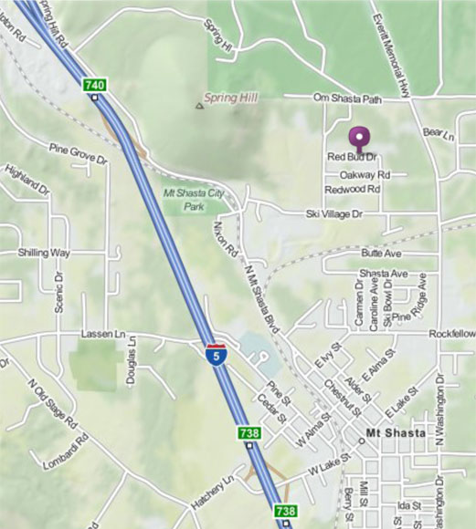

Home Page Concert Testimonials Anton's Bio Anton's CDs Tour Schedule Laura Berryhill Shastasong Events Studio Mount Shasta transformation music concerts

From I-5 exit at 738 (Lake Street) and head east. Stay on Lake Street for 2 miles. The street name will change to Everett Memorial Highway. After passing Mount Shasta High School and the railroad tracks, turn left on Ski Village Drive. Turn right on Vista. Turn left on Red Bud Drive. Take the 4th driveway on the right (200 meters from Vista). The concerts are upstairs at the Shastasong Events Studio.